Next: About this document ...
Selected Solutions
for
Chapter 31 (Hwk 10)
of
Fundamentals of Physics, 6/E
by Halliday, Resnick, and Walker
James B. Whitenton
Southern Polytechnic State University
- 5
- Table 27-1 gives the resistivity of copper. Thus,
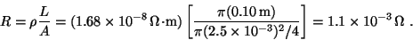
- We use
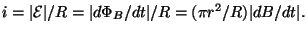 Thus
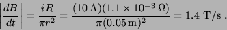
- 10
- The flux
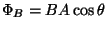 does not change as the loop is rotated.
Faraday's law only leads to a nonzero induced emf when the flux is changing, so the result
in this instance is 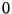.
- 15
- Let 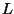 be the length of a side of the square circuit. Then the magnetic flux
through the circuit is
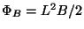, and the induced emf is
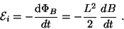
Now
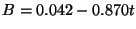 and
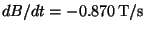. Thus,
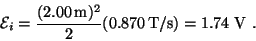
The magnetic field is out of the page and decreasing so the
induced emf is counterclockwise around the circuit, in the same direction as the emf of
the battery. The total emf is
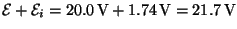.
- The current is in the sense of the total emf (counterclockwise).
- 20
- The field (due to the current in the straight wire) is
out-of-the-page in the upper half of the circle and is into the
page in the lower half of the circle, producing zero net flux, at
any time. There is no induced current in the circle.
- 25
- Thermal energy is generated at the rate
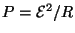
(see Eq. 27-23). Using Eq. 27-16, the resistance is given by 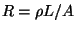,
where the resistivity is
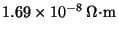 (by
Table 27-1) and
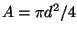 is the cross-sectional area of the wire (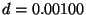 m is the wire thickness). The area enclosed by the loop is
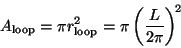
since the length of the wire (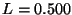 m) is the circumference of the loop.
This enclosed area is used in Faraday's law (where we ignore minus signs in the interest
of finding the magnitudes of the quantities):
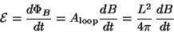
where the rate of change of the field is
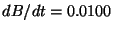 T/s.
Consequently, we obtain
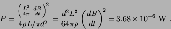
- 35
- We use Faraday's law in the form
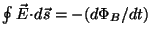, integrating along the dotted path
shown in the Figure. At all points on the upper and lower sides the electric
field is either perpendicular to the side or else it vanishes. We assume it
vanishes at all points on the right side (outside the capacitor). On the left
side it is parallel to the side and has constant magnitude. Thus, direct
integration yields
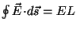, where is the
length of the left side of the rectangle. The magnetic field is zero and
remains zero, so
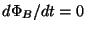. Faraday's law leads to a contradiction:
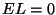, but neither 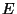 nor is zero. Therefore, there must be an electric field
along the right side of the rectangle.
- 45
- Starting with zero current at 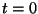 (the moment the
switch is closed) the current in the circuit increases according to
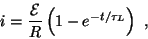
where
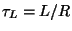 is the inductive time constant and 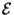 is the battery emf.
To calculate the time at which
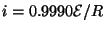, we solve for t:
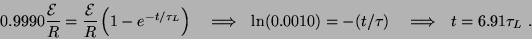
- 70
- We use
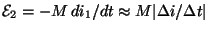 to find 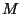:
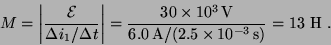
Next: About this document ...
Jason Pinkney
2003-05-15